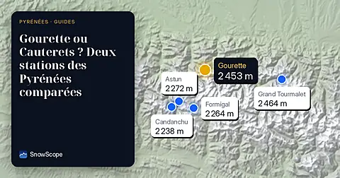

Pyrénées : 63 cm de neige nouvelle prévus sur deux semaines
Jusqu'à 63 cm de neige nouvelle vont tomber sur les Pyrénées au cours des deux prochaines semaines, l'essentiel arrivant pendant les sept premiers jours. La neige se concentre au-dessus de 2 000 m, où la montagne construira un manteau significatif jusqu'au début décembre.
Consultez les prévisions neige en temps réel pour Cauterets Cirque du Lys sur l'application SnowScopeHauteurs de neige, alertes poudreuse et carte 3D, gratuitement.
Deux vagues de neige : la première semaine est l'événement principal
Les perspectives montrent deux événements neigeux distincts. La première semaine (19–25 novembre) représentera environ 70 % de toute la neige nouvelle, dominée par deux journées actives : jeudi 21 novembre et samedi 22 novembre. Le 21, 14 stations réparties sur le massif sont prévues pour accumuler 5 cm ou plus, Gavarnie-Gèdre atteignant 12 cm. Le 22 sera encore plus productif : 20 stations devraient voir de la neige, et Gourette peut gagner 17 cm tandis que Cauterets Cirque du Lys en recevra 14 cm.
La deuxième semaine (26 novembre au 2 décembre) sera beaucoup plus calme. Un système secondaire autour du 26 novembre apportera 5 à 8 cm à des stations éparses, puis du temps sec s'installe jusqu'au début décembre. Ce rythme sur deux semaines favorise les skieurs qui peuvent être à la montagne pendant la première semaine.
| Station | Hauteur de neige | Neige fraîche, 72 h | Attendu, jours suivants | Sommet |
|---|---|---|---|---|
| Cauterets Cirque du Lys | 3 cm | 1 cm | 10 cm | 2 420 m |
| Astun | 0 cm | 0 cm | 6 cm | 2 272 m |
| Gavarnie-Gèdre | 1 cm | 0 cm | 6 cm | 2 283 m |
| Gourette | 3 cm | 1 cm | 8 cm | 2 453 m |
| Piau-Engaly | 9 cm | 6 cm | 12 cm | 2 527 m |
| Grand Tourmalet | 1 cm | 1 cm | 7 cm | 2 464 m |

L'altitude décide qui reçoit la neige
L'altitude est le facteur dominant de cette prévision. Au-dessus de 2 500 m, le total médian de neige nouvelle sur 14 jours est de 24 cm, certaines pentes atteignant 35 cm. Entre 2 000 et 2 500 m, comptez sur 19 à 28 cm. La transition est nette : entre 1 500 et 2 000 m, seulement 2 à 6 cm sont prévus, et au-dessous de 1 500 m, presque rien.
Sur tout le terrain montagneux de la région, environ 2 300 km² devraient accumuler 20 cm ou plus. Seuls 275 km² atteindront 50 cm ou plus—surtout les crêtes les plus hautes et les cirques. La neige de début de saison est fragile sur un manteau mince et des rochers exposés, donc consultez le bulletin officiel d'avalanches si vous envisagez une sortie hors-piste.

Quelles stations dominent la prévision
Cauterets Cirque du Lys arrive en tête avec un total sur deux semaines de 47 cm, sa journée la plus importante le 22 novembre (14 cm). Gourette se classe juste derrière avec 40 cm, mais son maximum journalier est plus élevé—17 cm le 22. Astun et Gavarnie-Gèdre se situent tous deux autour de 41–43 cm total, Gavarnie-Gèdre montrant sa plus forte rafale le 21 novembre (12 cm). Piau-Engaly, déjà la plus profonde aujourd'hui avec 9 cm, va ajouter 37 cm et culmine le 21 novembre avec 10 cm.
Ces prévisions couvrent les pentes de mi-montagne de chaque station, pas les fonds de vallée. La neige précoce repose sur un sol mince et non consolidé où les rochers peuvent être près de la surface.

Comment la région change fin novembre
Aujourd'hui, 18 novembre, seulement 460 km² des Pyrénées sont enneigés, et seulement 16 des 53 stations ont une neige mesurable. La prévision montre une forte reprise. Le 21 novembre, la zone enneigée devrait atteindre environ 750 km², et environ 20 stations montreront de la neige à la fin novembre.
Cette amélioration s'appuie sur l'altitude : le haut terrain au-dessus de 2 000 m se remplira régulièrement, tandis que les basses altitudes restent minces. Les pentes orientées nord en mi-montagne offriront la meilleure stabilité et le manteau le plus profond après chaque vague de tempête.
Ce à quoi faire attention et quand
Jeudi 21 novembre et samedi 22 novembre sont les deux journées critiques. Combinées, la plupart des stations vont gagner 10 à 25 cm sur ces deux dates, la plus grosse journée étant le 22. Si vous pouvez skier l'un de ces jours ou immédiatement après, vous trouverez les meilleures conditions de début de saison.
Après le 25 novembre, les chutes de neige baissent fortement. L'événement du 26 novembre est mineur ; puis il reste sec la plus grande partie du début décembre. La deuxième semaine est plutôt une période de stabilisation qu'une période de construction.
Conseils aux skieurs
- Visez les 21 et 22 novembre pour la neige fraîche la plus profonde. L'essentiel du total sur deux semaines de la région arrive ces deux jours-là ou dans la période immédiatement après.
- Restez sur les pentes au-dessus de 2 000 m : la prévision montre peu d'accumulation en dessous de cette hauteur, et le terrain rocheux peut être exposé après une neige de début de saison mince.
- Privilégiez les expositions nord au-dessus de 2 000 m, où le manteau est plus profond et la stabilité de la neige est meilleure sur un manteau mince.
- Consultez le bulletin officiel d'avalanches si vous envisagez une sortie hors-piste ; la neige de début de saison sur un sol non consolidé est instable.
- Les prévisions météorologiques changent. Revenez sur ce post à l'approche du 21 novembre pour la mise à jour la plus récente.
À propos de ces chiffres
Les hauteurs de neige des stations sont la neige la plus épaisse sur le haut du domaine à la date indiquée ; ce sont des estimations pour une zone, pas une mesure en un point. Les prévisions peuvent changer. Consultez toujours le bulletin d'avalanche officiel avant le hors-piste.
Bulletins d'avalanche officiels: Météo-France / Meteocat / AEMET
Citer ce bulletin
Pour la recherche, l'enseignement ou la presse : chiffres et graphiques réutilisables librement sous CC BY 4.0 avec cette citation.
SnowScope (2026), Pyrénées : 63 cm de neige nouvelle prévus sur deux semaines, https://snowscope.app/blog/fr/2026/11/pyrenees-2-week-snow-forecast-maps-18-november-2026.html, consulté le 2026-11-18
SnowScope (Atlas Labs). (2026, November 18). Pyrénées : 63 cm de neige nouvelle prévus sur deux semaines. SnowScope snow reports. https://snowscope.app/blog/fr/2026/11/pyrenees-2-week-snow-forecast-maps-18-november-2026.html
BibTeX
@misc{snowscope2026pyrenees2weeksnowforecas,
author = {{SnowScope (Atlas Labs)}},
title = {Pyrénées : 63 cm de neige nouvelle prévus sur deux semaines},
year = {2026},
month = nov,
howpublished = {\url{https://snowscope.app/blog/fr/2026/11/pyrenees-2-week-snow-forecast-maps-18-november-2026.html}},
note = {Published 2026-11-18 12:17 UTC; accessed 2026-11-18}
}· CC BY 4.0 · Méthodes, données et outils →
Suivre Cauterets Cirque du Lys
Gratuit : un message quand la neige arrive, et la météo chaque matin.
Autres bulletins neige

Gourette et Cauterets côte à côte : altitudes, neige habituelle par mois, meilleures semaines et accès, d'après 46 hivers passés.

Cauterets Cirque du Lys domine les Pyrénées avec 24 cm au sommet le 22 novembre. Les chutes de neige prévues le 25 novembre pousseront la couverture de 44 à 51 stations.

Pour une semaine de ski en famille à petit budget à Astún-Candanchú en décembre, visez la fin du mois, quand les pistes supérieures ont une bonne neige dans 67 % des hivers passés.